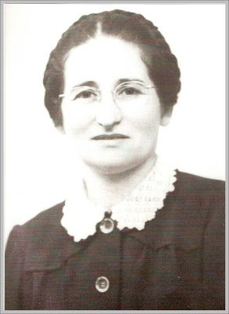
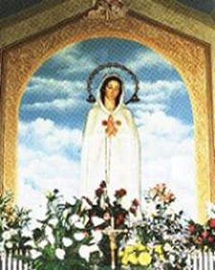
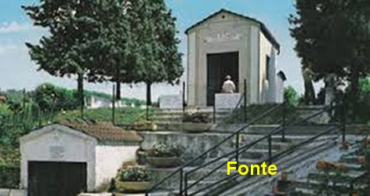
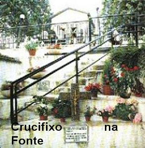

FONTE DA GRAÇA
COM AS IRMÃS FRANCISCANAS
DO LÍRIO
Todavia, apesar
de todas as dificuldades encontradas, um grupo de pessoas piedosas, verdadeiros
cristãos que sabem analisar os fatos do quotidiano, se
interessaram em acomodá-la
perto de um colégio de Irmãs de Caridade, mas somente a Madre Superiora podia visitá-la.
Até que no dia 20 de Maio de 1949, Pierina foi hospedada provisoriamente no Convento
das Irmãs Franciscanas do Lírio de Bréscia.
Foram muitas as
doenças que a afligiram nos primeiros anos desta permanência. E por isso mesmo,
ela não se tornou uma freira, mas foi viver no Convento em perfeita obediência.
Neste período foi frequentemente visitada e consolada por sua grande amiga, a
Santa Maria Crucificada Di Rosa.
OS ESTRANHOS ABSCESSOS
No meio de tanta
incompreensão das autoridades e inclusive, de médicos que chegaram a considerá-la
histérica, apareceu um médico de consciência, Dr. Adolfo Battist, que lhe deu os
cuidados necessários e testemunhou com admiração, a paciência com que Pierina suportou
tanta dor e humilhações, causadas por uma terrível doença que ela sofreu no
período de 1951 até o início de 1953. Era uma formação de inúmeros abscessos
espalhados em várias partes do corpo, sendo necessárias umas quarenta incisões
com drenagem e colocação de medicamentos nas cavidades residuais.
PADRE GIUSTINO E O AUXÍLIO
CONDICIONADO
Ela enfrentou também
outros sofrimentos de natureza moral oriundos da sua relação com o seu Confessor Padre
Giustino Carpin. Pelo comportamento cético do sacerdote, Pierina não tinha a
coragem de lhe contar as minúcias das Aparições, das mensagens que recebeu e
inclusive, das frequentes visitas da sua protetora, Santa Maria Crucificada. E a
Santa, insistia com Pierina para conversar com o Padre Giustino pedindo para ele
acompanhá-la a Roma, a fim de entregar ao Papa Pio XII a Mensagem de NOSSA
SENHORA sobre a “HORA DA
GRAÇA UNIVERSAL”, a ele endereçada, desde
1947, em Montichiari. Mas, o Padre nunca estava disponível, e mais uma vez se
mostrou inteiramente cético, não ajudando em nada. A reposta do Padre a
Pierina era sempre a mesma:
Se Santa Maria
Crucificada não fizer um milagre, eu não assumo qualquer responsabilidade.
Ele sempre se
recusou acompanhar Pierina a Roma para entregar ao Papa, a Mensagem de NOSSA
SENHORA. E o tempo passou.
A VIDENTE VISITA O PAPA
PIO XII
No dia 15 de Maio
de 1951, Santa Maria Crucificada apareceu a Pierina e lhe disse que a VIRGEM MARIA
ia lhe aparecer em Fontanelle. Como o Confessor não queria colaborar em nada, sempre
duvidando das manifestações sobrenaturais, um grupo de pessoas influentes, que
quiseram se manter ocultas, conduziram Pierina ao Papa Pio XII, em
CastelGandolfo, no dia 8 de Agosto de 1951, a fim de que ela pudesse atender o
pedido de NOSSA SENHORA.
O Sumo
Pontífice se inclinou sobre a vidente, que estava ajoelhada, e humildemente lhe
disse: “Diz, minha filhinha,
tornaste-te melhor depois de teres contemplado NOSSA SENHORA”? Pierina ficou um pouco embaraçada com o imprevisto da pergunta,
mas balançou a cabeça afirmativamente. O Sumo Pontífice colocando a mão sobre a cabeça
dela disse: “Coragem, filhinha,
esforça-te por corresponder da melhor forma a uma graça tão insigne e maravilhosa.
Para isso te daremos a nossa especial Bênção Apostólica”. E então o Sumo Pontífice abençoou Pierina. No final o Papa se inclinou
sobre ela e disse: “Por favor,
filhinha, reza por nós”.
No dia 22 de
Maio de 1951, Santa Maria Crucificada Di Rosa, apareceu a Pierina e lhe falou:
“A VIRGEM não deixará de cumprir o que
prometeu. (A Aparição em Fontanelle e a Bênção
da Fonte) Só não será concedido
o mérito das suas Graças às pessoas inativas e temerosas”.
ESTIGMAS DA PAIXÃO DO
SENHOR
 Do dia 13 de Maio até o dia 1º
de Junho de 1953, Pierina viajou com sua amiga Lúcia para visitar o Santuário
Franciscano de Verna. Pela Graça de NOSSO SENHOR JESUS, nela apareceram às
chagas e feridas da Paixão de CRISTO. Nesta mesma ocasião, Santa Maria
Crucificada lhe apareceu, e disse que por Vontade de NOSSO SENHOR, ela nunca
mais teria alguma doença.
Do dia 13 de Maio até o dia 1º
de Junho de 1953, Pierina viajou com sua amiga Lúcia para visitar o Santuário
Franciscano de Verna. Pela Graça de NOSSO SENHOR JESUS, nela apareceram às
chagas e feridas da Paixão de CRISTO. Nesta mesma ocasião, Santa Maria
Crucificada lhe apareceu, e disse que por Vontade de NOSSO SENHOR, ela nunca
mais teria alguma doença.
Os estigmas da
Paixão do SENHOR impressos em Pierina foi uma grande surpresa! Embora depois ficassem
ocultos, o espanto foi geral! Aqueles que acreditavam nas palavras da vidente exultaram
com o fato, era afinal, a confirmação Divina. Aqueles que duvidavam inclusive muitas
autoridades que se diziam responsáveis tiveram que refazer e reconsiderar o seu
julgamento pessoal.
Em Julho de
1954 o Padre Ilário Moratti foi autorizado a organizar os escritos do Diário de
Pierina.
Em março de
1960, o segredo que a VIRGEM MARIA mandou para o PAPA, foi entregue ao Sumo
Pontífice Papa João XXIII num envelope lacrado.
SEGUNDO PERÍODO DAS
APARIÇÕES (1960-1966)
Treze anos depois
da última aparição, na manhã do dia 5 de Abril de 1960, Pierina estava rezando em
seu quarto, diante de um pequeno altar de NOSSA SENHORA, quando a VIRGEM MARIA lhe
apareceu novamente. Com imensa alegria e muita felicidade, ouviu as palavras
consoladoras da MÃE DE DEUS, pelas amarguras experimentadas durante aqueles anos
de ausência.
Depois, NOSSA SENHORA
lhe apareceu mais duas vezes, no dia 6/Dezembro/1961 e no dia 27/Abril/1965, ou
seja, no início e no final dos trabalhos do Concílio Vaticano II. A VIRGEM MARIA
pediu orações para o bom êxito do Concílio e estimulou Pierina a ter
tranquilidade diante das ofensas e acusações. Também neste período, faleceu em
1962, a mãe da Vidente, a senhora Rosa Bártoli.
Em 27/Fevereiro/1966,
a MÃE DE DEUS novamente apareceu a Pierina, no seu quarto, prometendo-lhe uma nova
Aparição em Fontanelle, no domingo, dia 17/Abril/1966, para tornar milagrosa a
água da fonte.
Fontanelle é um subúrbio
de Montichiari, a poucos quilômetros da Catedral, aproximadamente três quilômetros.
Pierina conhecia bem aquela região, pois ali viveu a sua infância.
APARIÇÃO EM FONTANELLE
O senhor Bispo Diocesano
de Bréscia, Dom Jacinto Tredici, informado acerca da Aparição, recomendou a Pierina
o mais absoluto silêncio. Ela obedeceu. No dia
marcado ela foi a Fontanelle
apenas acompanhada de uma única amiga. Chegando, começaram a rezar o Terço. Ao
meio dia, após o toque do Ângelus, a VIRGEM apareceu e lhe disse:
- “O Meu Divino
FILHO JESUS, todo amor, enviou-me aqui para tornar milagrosa esta nascente de
água, e tu, agora, como sinal de penitência e purificação, tens de beijar o
primeiro degrau da escada”.
E assim, NOSSA SENHORA
pediu a Pierina diversas atividades e inclusive marcou na escada de mármore, o local
onde queria que fosse colocado um Crucifixo. Depois disse:
- “Desejo que todos
os enfermos e os meus filhos peçam perdão ao Meu Divino FILHO com um beijo de
amor no Crucifixo, antes de beberem da água da fonte”.
Depois, NOSSA SENHORA
tocou a água da fonte em dois pontos e fez outras recomendações, dizendo que ali junto
a fonte será a missão de Pierina,
“ao lado dos enfermos e dos pobres e necessitados”.
Concluídas as Suas Palavras a VIRGEM elevou-se ao Céu.
Em face do silêncio
imposto a Pierina, pelo senhor Bispo, somente ela e uma amiga acompanhante estavam
presentes. Entretanto, uns meninos que brincavam a distância, observaram que
algo de sobrenatural havia acontecido ali. Eles conheciam Pierina. Chegando a
casa com certeza, contaram aos pais. O povo daquela região ficou na expectativa.
TANQUE PARA IMERSÃO DOS
ENFERMOS

No dia 13
de Maio, quando a MÃE DE DEUS apareceu em Fontanelle, era mais ou menos 11 horas
e 40 minutos, e estavam presentes cerca de 20 pessoas. E a VIRGEM ordenou:
- “Quero que se
construa aqui um tanque para a imersão dos enfermos. E esta outra fonte",
disse ELA apontando , "seja reservada para beber”. E a VIRGEM MARIA completou: “Quero que seja denominada FONTE DA GRAÇA”.
Pierina perguntou:
“O que a SENHORA deseja que
seja feito aqui em Fontanelle”?
NOSSA SENHORA
respondeu: “Obras de caridade
a favor dos enfermos que aqui acorrerão”.
Pierina, reconhecida,
agradeceu e mandou-lhe um beijo com a mão, num gesto de amor pela humanidade. NOSSA
SENHORA ROSA MÍSTICA acolheu o beijo, alegre e feliz, sorriu por alguns
instantes à Vidente e desapareceu.
NA FESTA DE CORPUS CHRISTI
No dia 9 de Junho de 1966,
Festa do Corpo e Sangue de DEUS, pelas 15 horas Pierina chegou à Fonte, onde já se
encontravam uma centena de pessoas, e logo, começou a reza do Terço. Na quarta
dezena NOSSA SENHORA apareceu bonita como sempre, e com alegria ELA disse:
- “Meu FILHO, Me
enviou hoje na Festa do Corpo do SENHOR, festa da união, festa de amor. Quanto
desejaria que estes grãos se tornassem pão eucarístico para outras tantas
comunhões reparadoras”.
Existia perto
da Fonte uma plantação de trigo, que a Divina MÃE apreciou e pediu:
“Desejo que este trigo, transformado
em hóstias, seja levado a Roma e, dali, a Fátima, para o dia 13 de Outubro”.
E a VIRGEM MARIA pediu também, que fosse
feita uma imagem da “ROSA
MÍSTICA”, para ser colocada na
“FONTE DA GRAÇA”, de frente para a plantação de trigo. Mas queria também,
que primeiro, o povo de Montichiari se consagrasse ao IMACULADO CORAÇÃO DE MARIA, e depois, no dia 13 de Outubro, trouxessem em procissão a imagem,
que ficou definitivamente na Fonte.
Como
informação complementar, referente ao trigo pedido pela VIRGEM MARIA, as
pessoas se movimentaram e foi tudo providenciado imediatamente. Colhido e
triturado o trigo, uma parte da farinha foi enviada ao Papa Paulo VI, no
Vaticano. Ele a abençoou pessoalmente e distribuiu para todas as Paróquias de
Roma. A outra parte foi entregue diretamente ao senhor Bispo de Fátima, Dom João
Pereira Venâncio, que se encontrava em Roma. Ele levou para Fátima onde foram
feitas milhares de hóstias.
COMEMORAÇÃO DA
TRANSFIGURAÇÃO DE JESUS
No dia 6 de agosto
de 1966 era a Festa da Transfiguração do SENHOR. Pierina chegou a Fonte por volta
das 14 horas e 30 minutos e viu que muitas pessoas a aguardavam. Às 15 horas iniciou
a recitação do Terço, e como da vez anterior, no início do 4º Mistério, NOSSA
SENHORA apareceu. ELA disse a Pierina que JESUS queria a
União Mundial da Comunhão Reparadora
, a ser estabelecida no dia 13 de Outubro
desse ano de 1966, e que a solenidade fosse repetida anualmente no mesmo mês e na
mesma data.
O TERCEIRO PERÍODO DAS
APARIÇÕES (1966-1991)
A Cúria Episcopal
de Bréscia mantinha severamente a proibição: de Pierina não voltar mais a Fontanelle.
Contudo a VIRGEM SANTÍSSIMA não se encontra ligada as
proibições humanas
quanto ao local das Aparições e também a quem deve aparecer ou não. Por isso mesmo,
Pierina teve outras Visões da MÃE DE DEUS em locais diferenciados, onde a VIRGEM
achou conveniente.
No dia 15 de Novembro
de 1966, num quarto em Bréscia, NOSSA SENHORA Apareceu a Pierina, sempre bonita e com
alegria lhe confirmou que “a
missão de Pierina é no meio dos doentes e necessitados”.
No dia 17 de Novembro
de 1966, Pierina foi pessoalmente conversar com o senhor Bispo, porque desejava morar
e viver próximo a Fontanelle, pois queria ajudar os enfermos e os pobres. O
Bispo Dom Jacinto prometeu analisar o caso, mas não deu resposta afirmativa e
nem negativa.
VISÃO DA ROCA DE MARIA
No dia 25 de Abril
de 1968, enquanto estava sendo inaugurada em Montichiari o “Recanto para os Padres Idosos”, na Roca de MARIA, Mãe da Igreja, obra realizada pelos Voluntários do Sofrimento,
também denominados Os Silenciosos Operários da Cruz, que é uma Organização fundada pelo Monsenhor
Luís Novarese, Pierina estando em Bréscia teve uma visão da Roca num imenso arco-íris
e NOSSA SENHORA no meio dele, mostrando um especial carinho pela obra.
Naquele mesmo ano,
Pierina agradecendo a hospitalidade despediu-se das Irmãs do Lírio em Bréscia e foi
morar em Montichiari, numa casa próxima a Igreja, onde permaneceu durante dois
anos. E provavelmente no dia 12 de Outubro de 1968, estando ela nesta casa, teve
uma Aparição de NOSSA SENHORA.

 PRÓXIMA PÁGINA
PRÓXIMA PÁGINA
PÁGINA ANTERIOR
RETORNA AO ÍNDICE